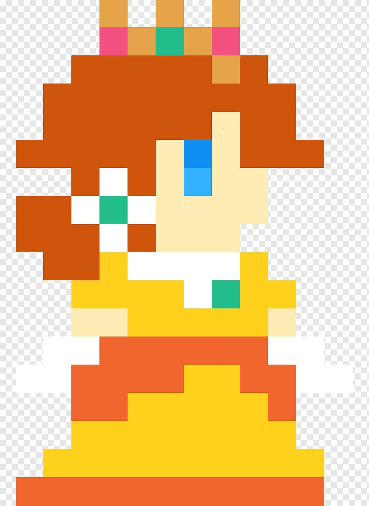

Selecione um personagem
-

- 

Mario
O bigodudo mais famoso do mundo. Teve sua estréia em 1986 no NES, considerado até hoje um dos melhores e mais influentes jogos já criado. Seu nome completo é Mario Mario.
O bigodudo mais famoso do mundo. Teve sua estréia em 1986 no NES, considerado até hoje um dos melhores e mais influentes jogos já criado. Seu nome completo é Mario Mario.